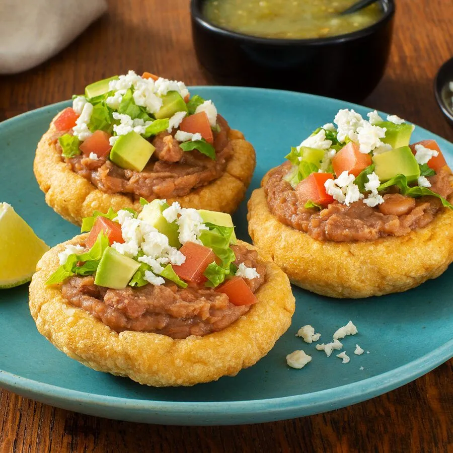

⬅️ Go back to see more recipes.
Bean Zopes

Bean Zopes are typical Mexican food so delicious made with love and corn dough and also beans.
Ingredients:
- Corn dough to make the zopes
- Refried beans.
- Cheese (if you want).
Steps:
- Cook the dough and make the form for zopes.
- Put the beans on the zope.
- Add cheese on if you want.
- You can add something like Sauce or avocado if you want.
- Enjoy the Zopes.